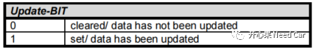
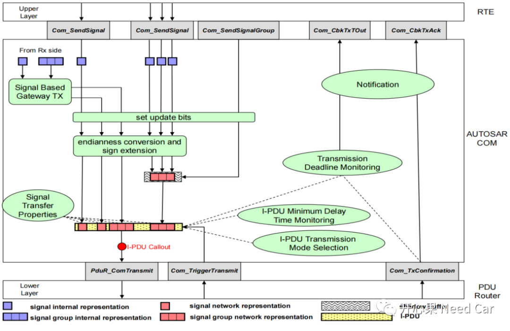
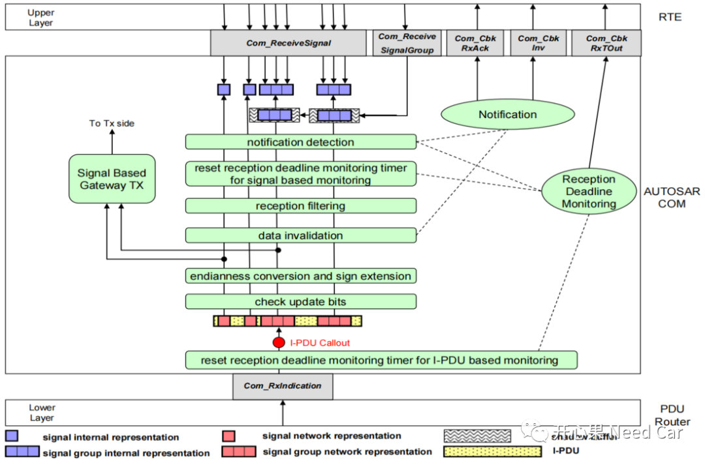
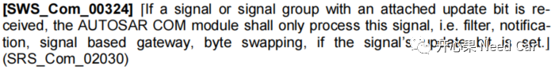
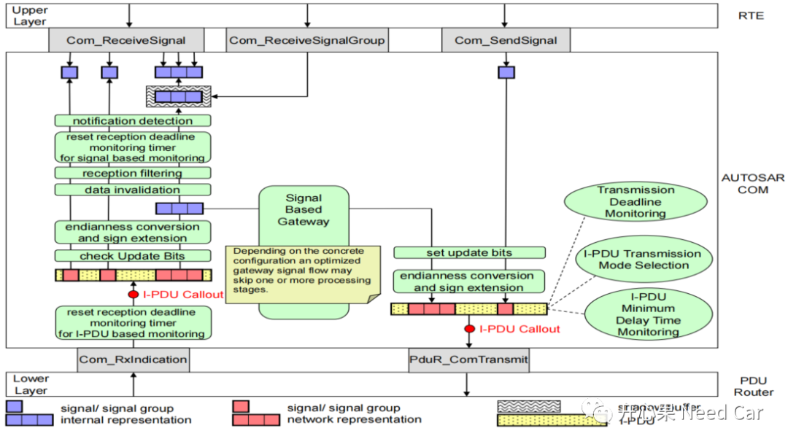
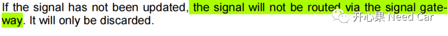

开心果 Need Car · 2022-11-27T13:28:00+08:00 · 微信原文
关于UB（Update-Bits）问题，之前有聊过，可以参考前文工程开发问题（五）：UB(Update-Bits)、UD(Update Deadline)的需求理解及实现。本文聚焦UB在收/发两个方向上的处理策略。
如果要为某个Signal或者Signal Group设置UB，需要配置参数ComUpdateBitPosition，该参数消耗I-PDU中的一个bit位，且收/发双方均需要匹配该bit位。
UB的具体含义如下所示：


（1）上层的ASWC通过RTE调用对应的Signal/Signal Group接口（Com_SendSignal()/Com_SendSignalGroup()），请求发送；
（2）COM层内部置位对应信号或者信号组的UB；
（3）信号的超度超过一个Byte时，需要进行字节序的转换（即：大端模式或者小端模式）；
（4）添加信号的发送属性。
UB == 1时，表示Signal/Signal Group有更新。当Signal/Signal Group对应的I-PDU发送处理后，需要及时清除UB，发送端何时清除UB呢？答：取决于配置参数ComTxIPduClearUpdateBit。
COM模块规定，ComTxIPduClearUpdateBit参数可以选择Transmit、Confirmation、TriggerTransmit。
当节点接收到某帧报文时，会通过Com_RxIndication()通知到COM层，之后再将PDU拆分成Signal。
1、信号的非路由处理

I-PDU接收以后的处理：
（1）复位I-PDU对应的DMT（Deadline Monitor Timer），如果配置了回调函数，则调用Com_cbkRxTout();
（2）如有配置的I-PDU Callout，调用对应的用户接口；
（3）检查UB。如果一个Signal或者Signal Group配置了UB。只有UB置位（=1）时，此Signal或者Signal Group才会进一步的处理，处理包括：过滤、通知、信号路由、字节序转换等。规范解释如下所示：

（4）字节序转换；
（5）无效数据处理，eg：接收到的信号超过了信号的阈值范围；
（6）接收过滤处理；
（7）复位Signal对应的DMT；
（8）通知上层处理。
2、信号路由处理
信号路由示意如下所示：

Autosar的架构中，COM层负责Signal的路由，如果Signal配置了UB，Signal在路由之前需要先识别UB == 1与否。如果UB = 0，则COM层不路由此Signal。规范中的解释如下所示：

提示：即使是不同总线（eg：CAN <-> Flexray）之间的信号路由，也可以通过COM层实现。
3、拓展思考
不同总线之间，通信速率往往会有所不同，比如：Flexray常用通信速率10Mbps，经典CAN总线常用通信速率500Kbps。如果诊断指令在Flexray和CAN之间进行路由，不同的通信速率及帧长度会使得两者之间产生速度差，即：一个快一个慢。对于这种速率存在差异的处理方式，可以在COM层路由。
往期精彩回顾